Activity: Live Section
This activity guides you through the process of creating a live section through a model. The model is modified by manipulating the live section edges.
Click here to download the activity file.
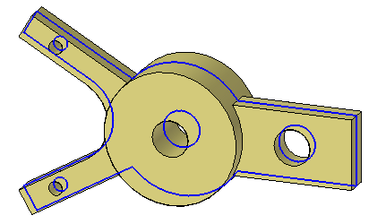
-
Open live_section.par.
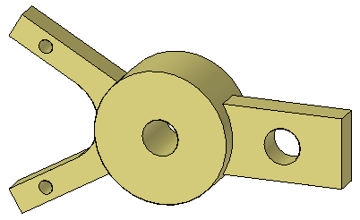
On the Home tab→Planes group, choose the Coincident Plane command.
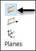
Select the plane shown.
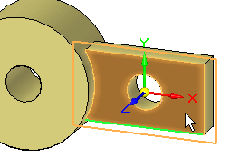
Move the coincident plane to the midpoint of the edge shown.
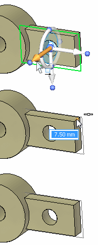
On the Surfacing tab→Section group, choose the Live Section command
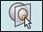
.Select the plane created in the previous step to define the live section.
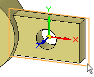
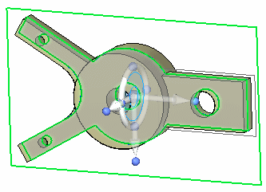
At this point, you can use the steering wheel to move the live section if desired.
Press the Escape key to end the Live Section command.
Notice in PathFinder that a Live Sections collector appears. You control the display of a live section with the icon.
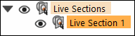
Instead of selecting a face to move, you can select the edge created by the section through a face to move. Moving the edge is the same as moving the face.
-
Select the edge shown and move it to observe the behavior.
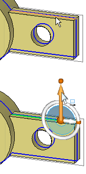
Dynamically move the edge but do not click. Press Escape to end the move. Press Escape again to clear the selected edge.
Note:The edge can take on all operations that its parent face can (for example: dimension, rotate, delete).
The model does not have to display to manipulate a live section. Turn off the display of the model.
Right-click the part window and on the shortcut menu choose Hide All → Design Body. Hide all reference planes too.
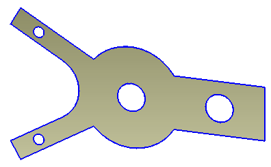
Change the display to a front view. Press Ctrl+F.
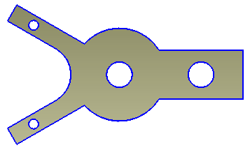
Rotate the two arms on the left 15° about the center hole. Select the live section edges shown using a fence.
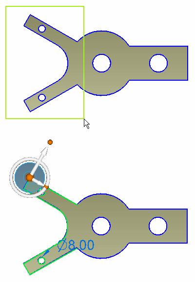
Move the steering wheel origin to the center of the hole as shown.
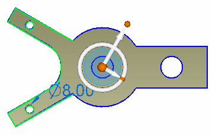
Change the orientation of steering wheel. Click the knob shown and then click the midpoint of the right edge.
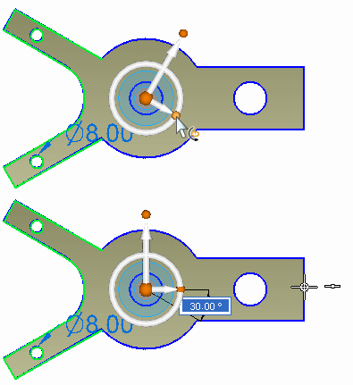
Click the torus. Type 15 and press the Enter key.
If you get an error during the rotation, uncheck the Design Intent option in the Design Intent panel.

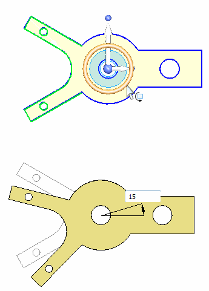
Press the Escape key to end the Move command.
Change to a Dimetric view.
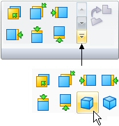
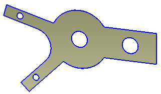
On the shortcut menu, turn on the display of the Design Body. Notice that the model changes to the modifications made to the live section.
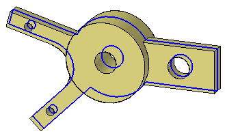
-
Click the circular edge shown and press the Delete key.
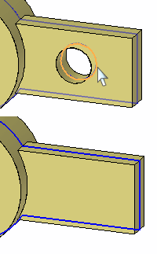
Deleting the live section circular edge is the same as deleting the circular face.
Turn off the design body display.
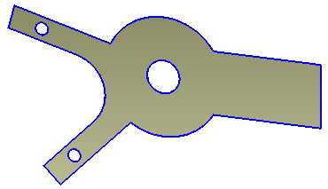
Draw a sketch containing two lines and one arc. Choose the Line command and click the right section edge.
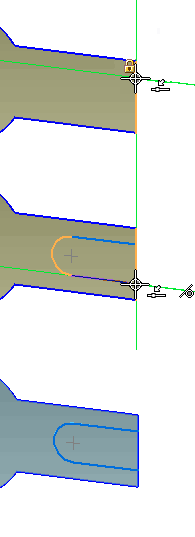
Align the circle center with the midpoint of the right edge.
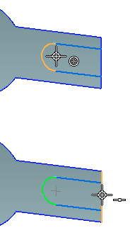
Select the region shown.
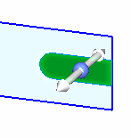
On the command bar, click to set the Extent Type to Through All
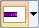
, and then click to set the Symmetric extent .In the Add/Cut list
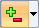
, click to set the Cut material option.Click on a direction handle and dynamically drag to exceed the width of the part.
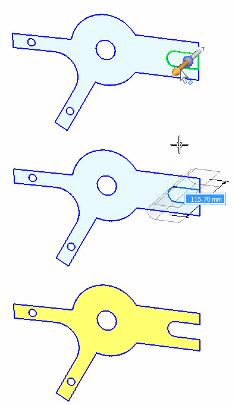
Turn on the design body.
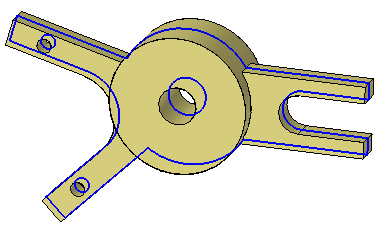
In PathFinder, turn off the live section display.
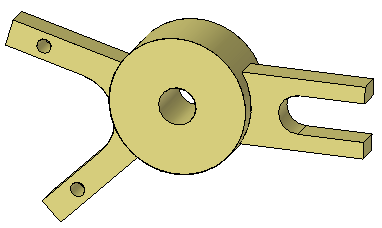
This completes the activity.
In this activity you learned how to create a live section. The Live Section command creates edges where a user defined plane intersects the design body. Each live section edge represents a face in the model. You can select either the face or live section edge to modify the model.
-
Click the Close button in the upper-right corner of the activity window.